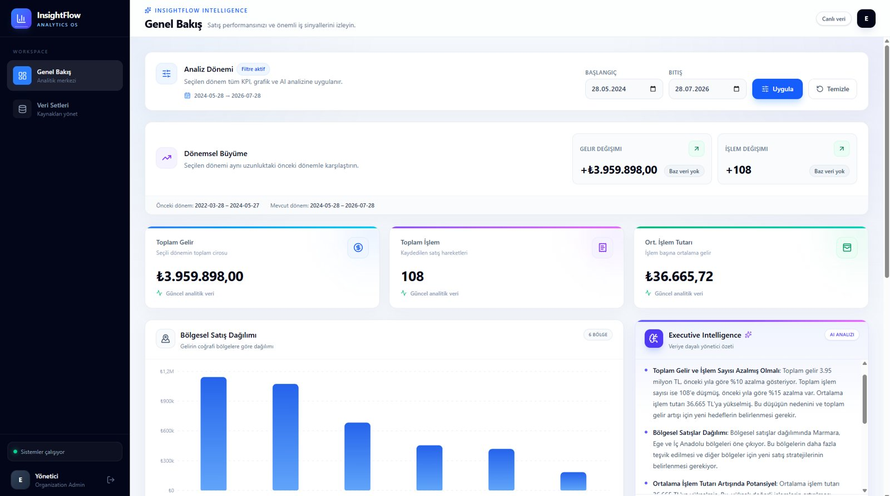

InsightFlow
Web tabanlı analiz ve raporlama platformu
Kullanıcıların satış verisini yükleyip dashboard'lara ve otomatik yönetici özetlerine eriştiği, çok kullanıcılı bir web uygulaması. Her şirket yalnızca kendi verisini görüyor.
- REST API ve PostgreSQL şeması; JWT ile kimlik doğrulama ve rol bazlı yetkilendirme
- Hatalı ve mükerrer kayıtları veritabanına ulaşmadan yakalayan doğrulama katmanı
- 62 otomatik test (~%95 kapsam), GitHub Actions ile CI, Docker
FastAPI, React, PostgreSQL, SQLAlchemy, Celery, Redis, Docker
Kodu GitHub'da incele